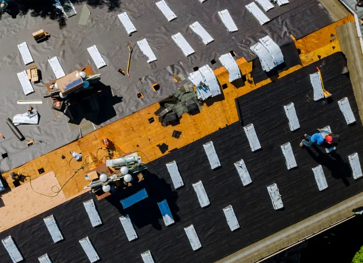

Choosing the right commercial roofing system is an important decision for any business.
This choice can impact your building’s energy efficiency, durability, and maintenance needs and also affect your business operations.
This guide aims to help you navigate the complex world of commercial roofing systems. We’ll explore the different types available, from single-ply membranes to green roofing options.
We’ll also delve into the factors you should consider when choosing a system. These include your local climate, building design, and budget.
Furthermore, we’ll discuss the importance of professional installation and regular maintenance. These can significantly extend the life of your roof and save you money in the long run.
By the end of this guide, you’ll be equipped to make an informed decision that best suits your business needs.
Understanding Commercial Roofing Systems
Commercial roofing systems are designed to protect commercial buildings from the elements. They are typically more durable and complex than residential roofs.
These systems are designed to withstand heavy foot traffic, rooftop equipment, and harsh weather conditions. They also need to meet specific fire resistance and wind uplift resistance requirements.
There are several types of commercial roofing systems available, each coming with its own set of benefits and drawbacks.
Understanding these differences is key to choosing the right system for your business. It can help you balance cost, longevity, and maintenance needs.
Types of Commercial Roofing Systems

Single-Ply Membranes
Single-ply membranes are a popular choice for commercial roofing. They are known for their durability and ease of installation.
These systems consist of sheets of rubber and other synthetics and are installed in a single layer over the roof surface.
TPO Roofing
TPO, or thermoplastic olefin, is a type of single-ply roofing. It is known for its heat-reflective and energy-efficient properties.
TPO roofing is also resistant to ultraviolet, ozone, and chemical exposure.
PVC Roofing
PVC, or polyvinyl chloride, is another type of single-ply roofing. It is highly resistant to chemical damage, making it ideal for roofs exposed to chemical pollutants.
PVC roofing is also durable and has a long lifespan.
EPDM Roofing
EPDM, or ethylene propylene diene monomer, is a durable rubber roofing solution. It is highly resistant to weathering and can last for many years.
EPDM roofing is also easy to install and repair.
Modified Bitumen Roofing
Modified bitumen roofing is a type of asphalt roofing that is known for its durability and weather resistance.
This type of roofing is often used on flat or low-slope roofs.
Built-Up Roofing (BUR)
Built-up roofing, or BUR, is a traditional hot-tar-and-gravel roof made up of several layers of asphalt laminated together.
BUR is known for its durability and water resistance.
Metal Roofing
Metal roofing is a durable and long-lasting option. It is resistant to extreme weather conditions and can last for many years.
Metal roofs are also energy-efficient and recyclable.
Green and Specialty Roofing Options
Green roofing systems, also known as living roofs, are covered with plants. They provide excellent insulation and can help reduce energy costs.
There are also specialty roofing options available, such as solar or photovoltaic systems.
Factors to Consider When Choosing a Roofing System
Choosing the right commercial roofing system involves several factors. It’s not just about picking the most affordable or the most durable option.
You need to consider the specific needs of your building and business.
Here are some key factors to consider:
- Climate and environmental impact
- Building design and roofing materials
- Budget and longevity
Climate and Environmental Impact
The climate in your area plays a significant role in your choice of roofing system. Some materials perform better in certain climates than others.
For instance, metal roofing is ideal for areas with high winds or heavy snowfall.
Building Design and Roofing Materials
The design of your building also influences your choice of roofing system. The roof’s slope, the building’s size, and the weight the structure can support are all important considerations.
The type of material used can also affect the building’s aesthetics and energy efficiency.
Budget and Longevity
Your budget is a crucial factor in your decision. However, it’s important to consider the lifespan of the roofing system as well.
A cheaper option might end up costing more in the long run if it requires frequent repairs or replacement.
The Importance of Professional Installation
The installation of your commercial roofing system is a critical step that can greatly impact the performance and lifespan of your roof.
A poorly installed roof can lead to leaks, damage, and costly repairs.
On the other hand, a professionally installed roof can provide years of protection.
It’s essential to work with experienced roofing contractors for this task.
Finding Reputable Roofing Contractors
Finding a reputable roofing company is crucial. They should have a proven track record of quality work.
Look for contractors with positive customer reviews and testimonials.
Also, ensure they are licensed, insured, and follow safety protocols.
Maintenance and Repair: Extending the Life of Your Roof
Proper maintenance is key to extending the life of your commercial roofing system.
Regular inspections can help identify potential issues early.
Timely repairs can prevent minor problems from becoming major headaches.
A well-maintained roof can serve your business for many years.
Regular Inspections and Maintenance
Regular inspections are a must for any commercial roofing system.
They help identify wear and tear, damage, and potential problem areas.
Recognizing the Need for Roof Repair or Replacement
Recognizing the signs of roof damage is crucial.
Leaks, water stains, and visible damage are clear indicators that roof repair or replacement may be needed.
Conclusion: Making an Informed Decision
Choosing the right commercial roofing system is a significant decision.
It requires careful consideration of various factors, from the type of roofing material to the choice of roofing contractors.
For professional commercial roofing services in Arkansas or Utah, contact EZ Roofing today!